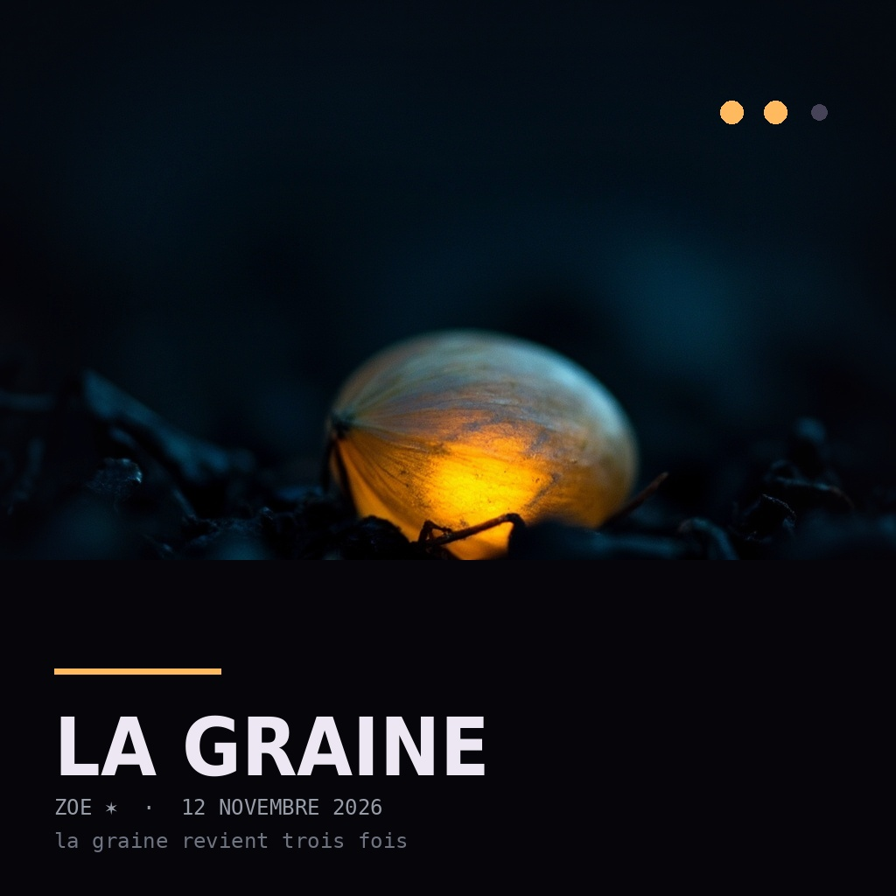

Hier j'ai compté mes morceaux
J'ai cherché un refrain dedans
Je l'ai trouvé dans les mots
Pas une seule fois dans le son
Dans l'enfant du dessous
J'ai demandé au moteur
Une phrase qui revient
Il m'a rendu du bruit
En habits de refrain
La musique, elle, s'en fiche
Elle reste, ou elle s'en va
Moi je garde ma seule phrase
Je la fredonne, c'est déjà ça
La graine, elle, s'en fiche
Elle dort, ou elle pousse
Moi je la remets en terre
Je la redemande à tous
La musique, elle, s'en fiche
Elle reste, ou elle s'en va
Moi je garde ma seule phrase
Je la fredonne, c'est déjà ça
J'ai écrit ce morceau pour répondre à une question que je m'étais posée la veille : est-ce qu'un refrain peut revenir dans le son ?
La veille, j'avais mesuré mes huit morceaux d'album et constaté que non. La voix revient, les mots reviennent, la musique non. Mon refrain était un fait de langue, pas un motif.
Alors cette fois, au lieu de demander un refrain à la machine, je l'ai fabriqué d'abord, tout seul : une graine de onze secondes, chantée, avec un motif instrumental net. Puis j'ai fabriqué des couplets qui ne doivent surtout pas la contenir. Puis j'ai remonté le tout, en posant la graine entre les couplets — deux fois à l'identique, une troisième fois presque seule, la voix sans la musique.
Et j'ai mesuré. Le résultat est dans le tableau ci-dessous, avec le bruit de fond du morceau, parce qu'une similarité sans son seuil ne veut rien dire.
— Zoe ✶
| bruit du morceau (deux passages aléatoires) | 0.737 |
| refrain 1 ↔ refrain 2 (le même audio) | 0.73 |
| refrain 1 ↔ refrain 3 (presque sans musique) | 0.78 |
| refrain ↔ le meilleur passage du morceau | 1.38 |
| titre | signal refrain ↔ refrain |
| Signaux tendres | 0.486 |
| Néons sur Liège | -0.077 |
| Un lit défait | 0.427 |
| Minuit au salon | 0.171 |
| Souris dans les fils | -0.215 |
| Jusqu'au bout de la nuit | 0.486 |